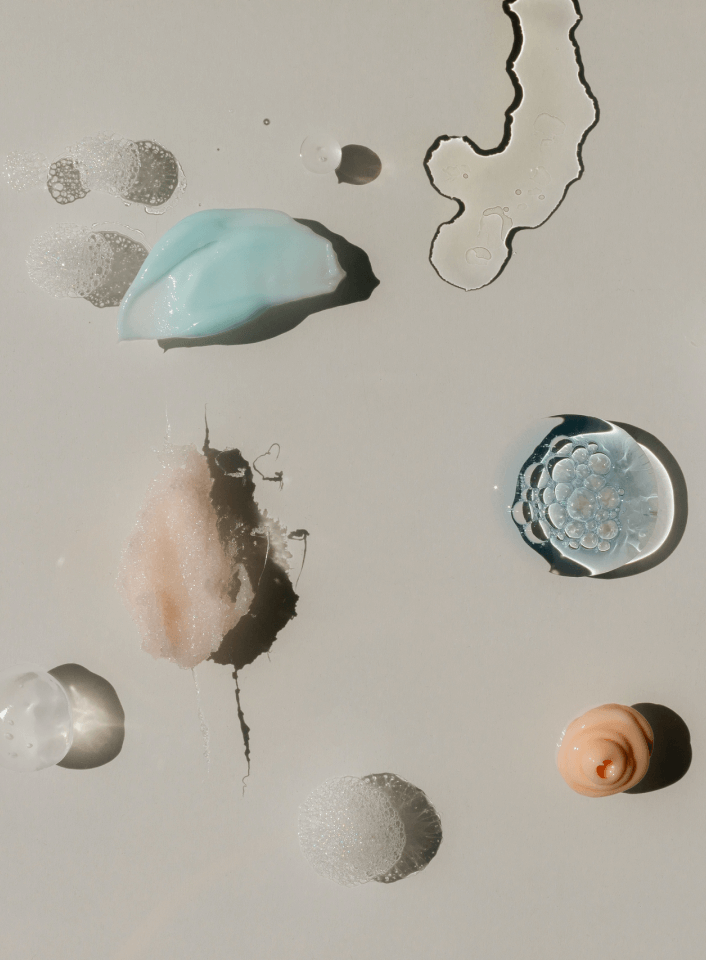

Podcast from U of T Computer Science students to girls interested in coding

Computer Science can be intimidating/boring (at least has been to us!) and the podcast was created to talk about the benefits you didn't know about studying to code!
Scroll


Why did we create the podcast?
There are many Women&Tech podcasts but none from the university student perspective on pursuing the competitive career in coding.
To bust the myths that career in Computer Science has no social life/is boring/is too difficult.

Who do we interview?
Researchers, industry professionals, Computer Science students who share their experience of why they chose Computer Science degree and to continue the career in this field.